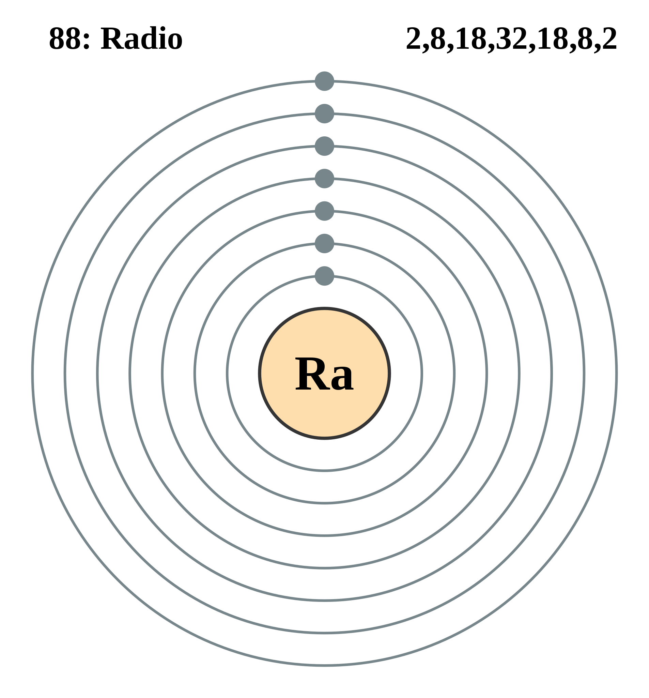

|
|
||
|
RADIO El radio es un elemento radiactivo raro, encontrado en minerales de uranio en proporción de una parte por aproximadamente 3 millones de partes de uranio. Desde el punto de vista químico, el radio es un metal alcalinotérreo y tiene propiedades muy semejantes a las del bario. Biológicamente, el radio se concentra en los huesos al reemplazar al calcio y, tras una irradiación prolongada, causa anemia y neoplasias cancerosas. Dado que las radiaciones del radio y de sus productos de descomposición destruyen preferentemente los tejidos malignos, el radio se ha utilizado para detener el crecimiento del cáncer. En su aplicación terapéutica, los compuestos de radio puro se sellan en tubos o agujas; también el radón, producto gaseoso de descomposición del radio, se bombea en tubos pequeños. El empleo del radio en pinturas luminosas para relojes de pared o pulsera y esferas de medida, así como en señales visibles en la oscuridad se basa en su radiación alfa que golpea un tubo de centelleo, como el de sulfuro de zinc. El Radio está presente de forma natural en el medio ambiente en muy pequeña cantidad. Debido a que siempre estamos expuesto al Radio y pequeñas cantidades de radiacción es liberada al ambiente. |
 |
DATOS Número Atómico: 88 Peso Atómico: 226.0254 Electronegatividad: 0.9 Configuración Electrónica:[Rn]7s2 Estados de Oxidación: +2 No. de Electrones de Valencia: 2 |